---
{
"layout": "note",
"title": "[Fluid mechanics] Ch 6. Law of the wall.",
"journal": true,
"section": "Study",
"topic": "Fluid Mechanics",
"excerpt": "난류 Turbulence는 Randomness그 자체이다. 시간에 따라서 진폭이 일정하지 않는 그냥 랜덤한 파동의 형태를 띈다. 이를 분석하기 위해서, 과학자들은 시간평균의 개념을 가져온다. 그리고 Time mean velocity ",
"classes": "wide",
"permalink": "/blog/mechanical-engineering/fluid-mechanics/fluid-mechanics-ch-6-law-of-the-wall/",
"study_area": "Mechanical",
"date": "2024-03-31",
"source_url": "https://jeffdissel.tistory.com/39",
"header": {
"teaser": "/blog/mechanical-engineering/fluid-mechanics/fluid-mechanics-ch-6-law-of-the-wall/images/img-001.png"
}
}
---
{% raw %}난류 Turbulence는
Randomness그 자체이다.
시간에 따라서 진폭이 일정하지 않는 그냥 랜덤한 파동의 형태를 띈다.
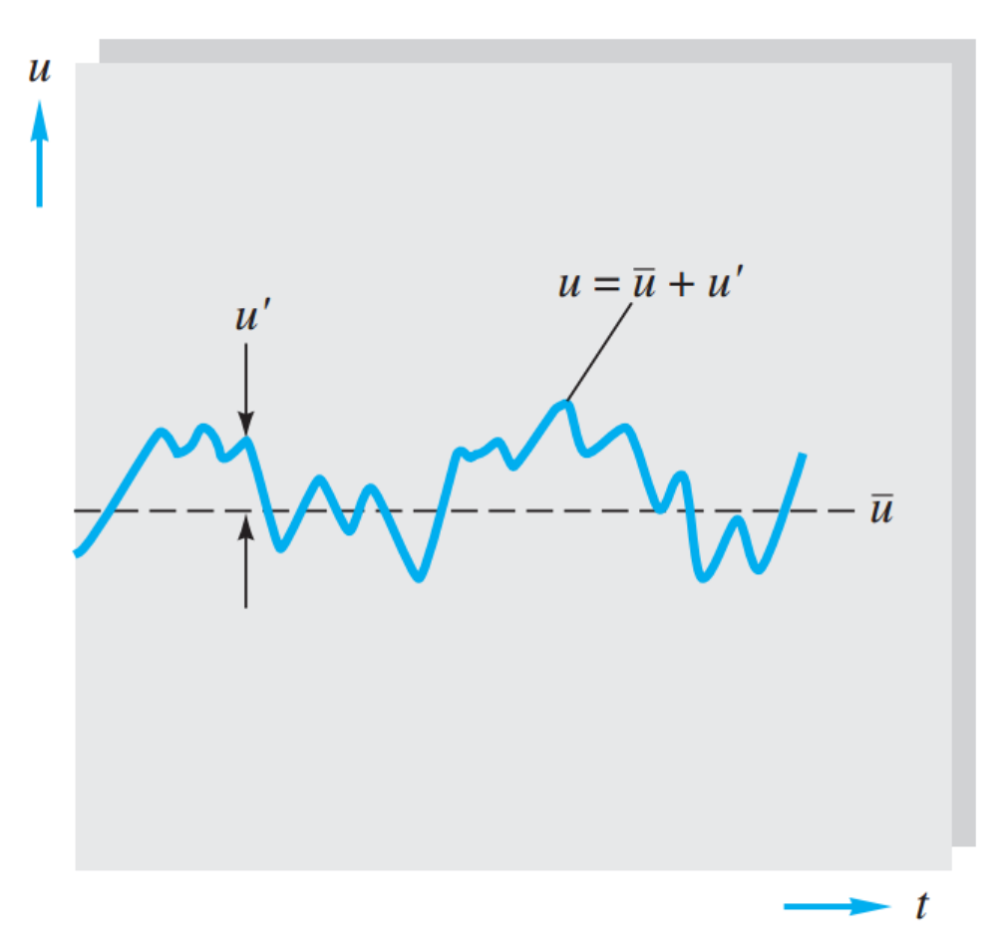
이를 분석하기 위해서, 과학자들은 시간평균의 개념을 가져온다.
그리고
Time mean velocity
라고 다음과 같이 정의한다.
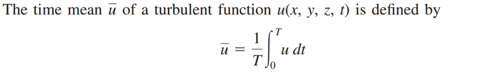
그니까, 특정시간동안 속도의 평균값을 구한후,
각 시간마다, 평균과의 편차를 다음과 같이 구하는 것이다.
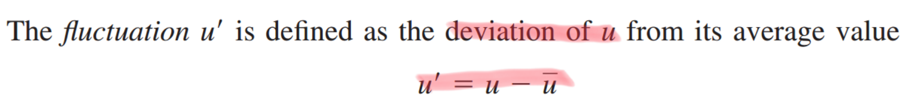
이 편차를 해당시간으로 적분해주면 어떻게 될까? 당연히 0 이 될 것이다.
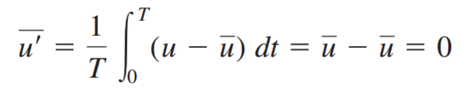
(각 반학생들의 점수에서 평균을 빼면 = 편차
그 편차를 모두 더하면 = 0
당연한 평균값의 원리이다.)
0 으로 만들꺼면서 편차를 굳이 왜 정의했을까??
바로 편차를 제곱하고 더하면, 얼마나 Fluctuate하는지를 알 수 있기 때문이다.
그리고 그 값을 Intensity of Turbulence라고 정의한다.
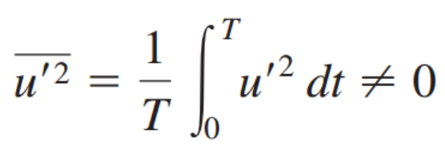
이제 우리가 정의한 대로, Continutiy eq과 Momentum eq에 대입해보자.
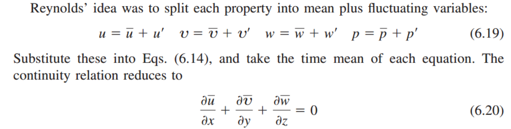
먼저, Continutiy는 0으로 원래 형태와 같게 나오게 된다.
Momentum에서는 다음과 같이 식이 표현되고
신기하게 생긴 녀석들이 viscous term에 붙게 된다.
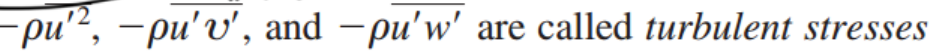
그리고 이녀석들을 Turbulent stresses라고 부른다.
즉, 점성에 의한 stress말고 난류의 fluctate에 의한 stress도 존재하는 것이다.
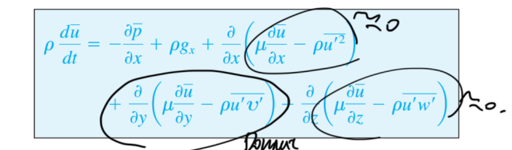
+x방향으로 흐르고 2차원 유체라고 가정하면, d/dy term빼고는 전부 소거할 수 있다.
이제 소거하고 정리하면, 다음과 같이 단순화 할 수 있고,
이제부터, stress는 laminar, turbulence로 나누어서 생각한다.
Laminar stress는 기존에 우리가 나루던, 점성에 의한 stress이다.
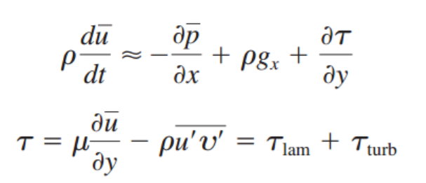
여기서 정말 재밌는 사실은,
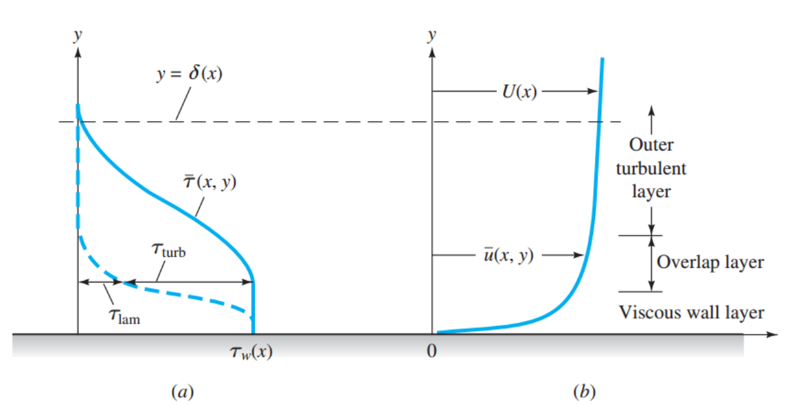
사진(a)를 보면, Laminar turbulence stress가 벽 근처에서는 지배적임을 알 수 있다.
No-slip condition에서 벽에서 속도는 0 이고, 벽 덕분에 벽근처 유체의 속도는 엄청나게 감소할 것이다.
따라서!!!!!!!, du/dy 값이 굉장히 크다!!
y방향으로의 u(x방향속도)의 변화가 굉장히 크다는 것이다.
다시 위에 Laminar stress를 보면, du/dy와 비례함을 알 수 있다. 그래서 벽근처에서는
Laminar stress dominant
하지만, 벽으로 멀어질수록, y방향 속도변화량이 크지않고,
Turbulent로 인한 momentum change가 주된 원인으로 stress를 작용한다.
그래서 우리는 벽근처에서 Free stream까지 크게 3가지 층으로 나눈다.
1. Viscous sub layer or wall layer: Viscous stress dominant
2. Overlap layer: mixed
3. Outer turbulent layer: Turblent stress dominat
천재적인 유체역학자들은 이제 현상만 보고, 실험을 통해서 식을 세우기 시작한다.
Prandtl deduced in 1930
u가 shear layer thickness와는 아무 상관이 없다 라고 발표하고
u를 결정하는 요소 4가지를 발표한다.
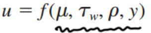
그리고 이 함수를 Dimensional analysis(무차원 분석)을 한다.
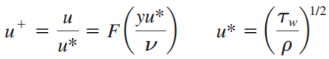
(u*: Friction velocity)
Karman deduced in 1933
karman은 'outer turbuluent layer에서의 유체는 viscosity랑 아무 상관이없다'라고 발표합니다.
그런데 U(free stream velocity)와의 차이 값은, 4가지 요소:
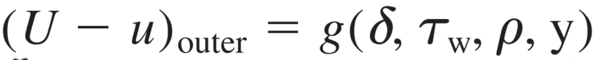
와 관련이 있다. 라고 발표하죠.
이렇게, Prandtl은 Viscous sublayer
Karman은 Outer turbulent layer을
분석했습니다.
그렇다면, 가운데, Overlap layer은??????
바로, 1937년 Millikan이라는 사람이 발표하죠.
Law of the wall
Logarithmic overlap layer(k = 0.41, B = 5.0)
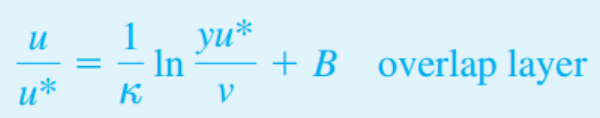
그리고 무차원수(u+, y+)로 단순화해서 표현합니다.
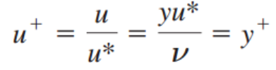
[위식들을 전부 plot한 그래프 ]
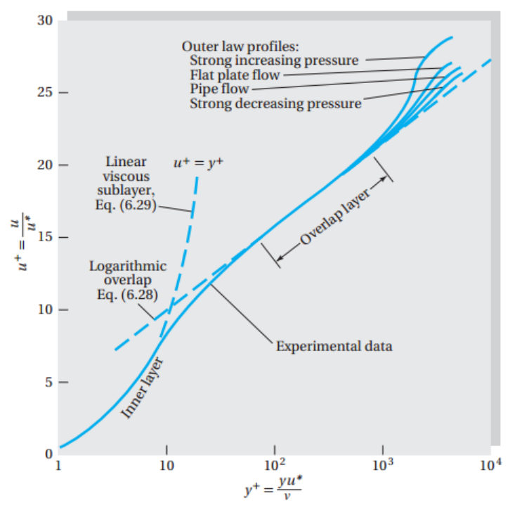
y+<5 : Viscous sublayer (u+ = y+)
5< y+ < 30 : Overlap layer ( u+ = ln y+ /0.41 + 5)
그 사이에 두 그래프가 미분가능하지 않게 만난다.
따라서, Experimental data로 smooth 하게 connect했음을 볼 수 있다.
단지 예측이지만 실제로 정확한 값이 도출되는 그래프,
당시에 무슨 실험장치도 없이 현상만 가지고 저걸 발견을 어떻게 했을까?
진짜 천재는 천재인가보다.{% endraw %}